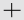

| About |
|
WebETM was established to concentrate service information within the wiring diagram environment accessible from the Web and easy to use. | |
Wiring Diagrams contain link and mouse over functionality. Location of available links are shown by clicking the Highlight button. Clicking a component name will open up a menu showing all related information to be selected individually. Clicking a diagram link leads directly to the selected diagram. Moving mouse over component causes the components name to be displayed in the lower status bar. | |
Legend lists all diagram components with their component names, location coordinates and reference information. It can be selected from the components menu or from the menu bar button. Accessing from the menu opens the document beginning with the selected component at the top. Opening from tool bar button use tabs for navigation. | |
Diagnostic Pin-out chart provides information about system functionality for test purpose and can be selected from the components menu or from the tool bar button. | |
Connector view shows the connectors format and the pin assignment. It can be selected from the components menu or from the menu bar button. | |
System Information contains functional descriptions, system operational details with component overviews accessible from the diagram selection level. | |
Star Finder shows components location in the car and points out the appropriate section. It can be selected from the components menu or from the menu bar button. | |
| Navigation |
|
Search
| |
| Diagram Navigation |
|
a drop down menu is provided when clicking the right mouse button and offers standard whip navigation capabilities. For more convenience some commands can be operated from buttons in the lower tool bar. | |
Reset View | |
Pan | |
Zoom | |
 | Zoom rectangle |
Highlight | |
|
Print | |
Left / Right | |